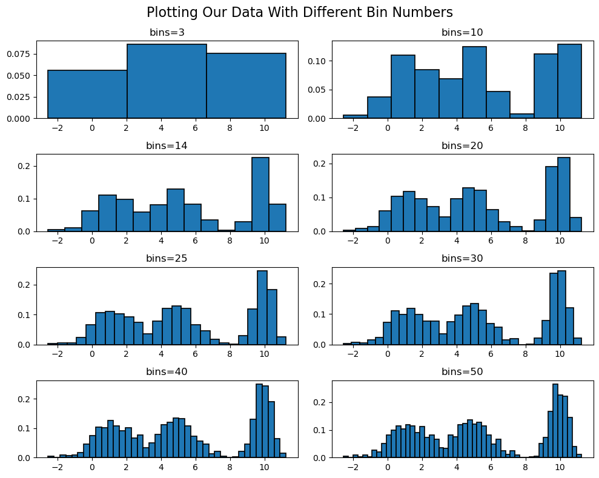
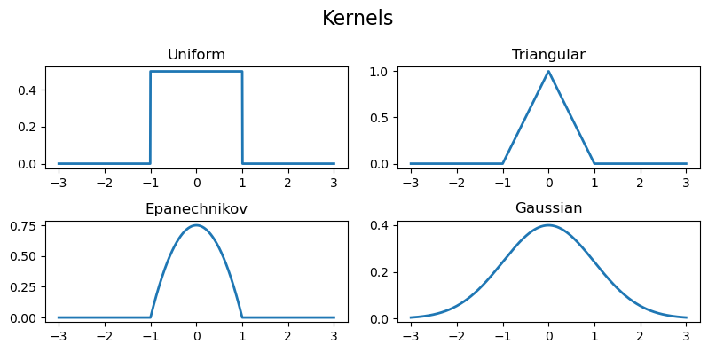
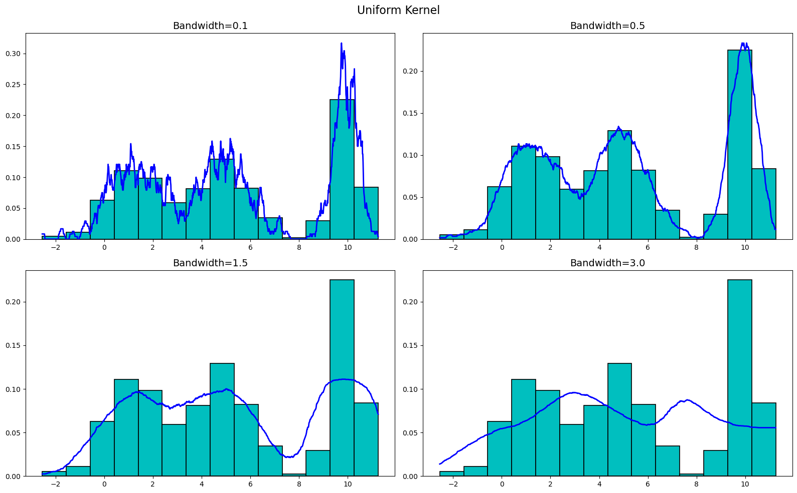
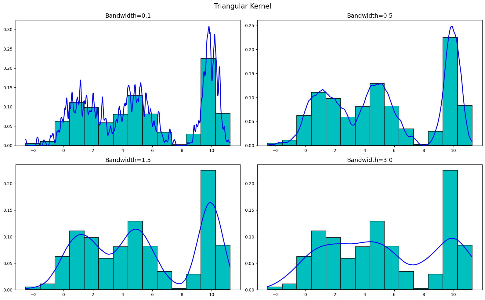
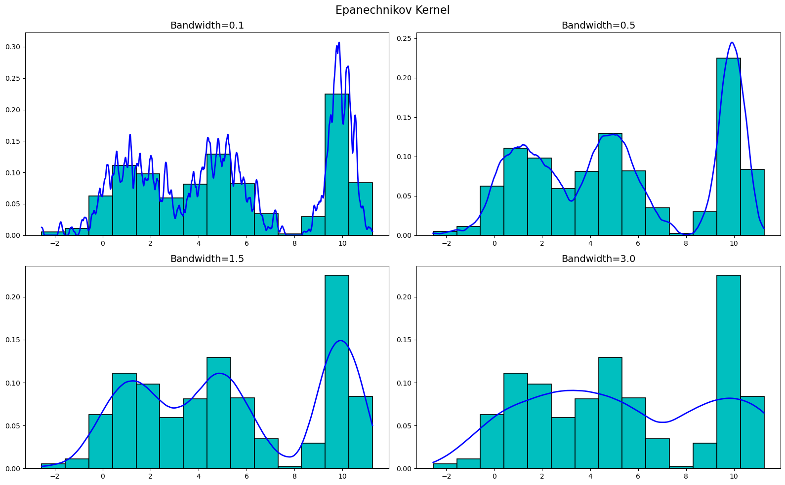
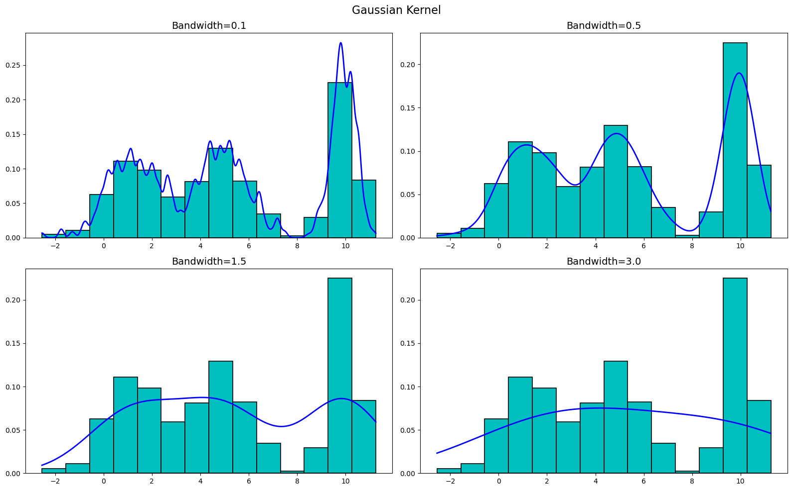

Kernel Density Estimation
"Must is a hard nut to crack, but it has a sweet kernel."
- Charles Spurgeon
In the realm of statistics and data analysis, understanding the distribution of data is paramount. This is where kernel density estimators (KDEs) come into play! Unlike traditional parametric methods that make assumptions about the shape of the underlying distribution, KDEs offer a flexible and non-parametric approach to estimating probability density functions. KDEs allow you to transform a scattered set of data points into a smooth, continuous curve, revealing the inherent structure and tendencies of your dataset. In this blog post, we delve into the world of KDEs, exploring their principles, applications, and the invaluable insights they offer in uncovering the inherent nature of data.
The Math Behind Histograms
Before getting into KDEs, it's important to first understand histograms and the math behind them.
Let's say we have a set of data $\mathbb{D} = \{x_1, \dots, x_N\}$ that we want to visualize. These data points are drawn from some unknown probability distribution $X$ with probability density function (PDF) $f_X(x)$. We want a way to both visualize and estimate $f_X(x)$ from our data $\mathbb{D}$. We can do this by creating a histogram of the data.
To build a histogram we need a couple things. If we know that our data lives in some interval $I=[a,b]$. We can define the bin width of the histogram to be $h = \frac{b-a}{m}$, where $m\in\mathbb{Z}^+$ is the number of bins we want in our histogram (some positive integer). The bin width is exactly what it sounds like it should be: the width of each bin in the histogram. We can now use this bin width to mathematically define the bins in our histogram.
We can define the $i$th bin in our histogram to be the interval $$B_i = (a + (i-1)h, a+ih].$$ Thus, we can get the starting and ending locations of each bin! Now, we need to figure out how many data points fall into each bin. More specifically we want to find the percentage of points that fall into each bin.
We can do this by simply getting the average number of points that fall into each bin, defined as $$\widehat{p}_i = \frac{1}{n}\sum_{m=1}^{n}\Bbb{I}_{B_i}(x_m)$$ where $\mathbb{I}$ is the indicator function.
With all of this, we can now define our histogram to be the function $$ \widehat{f}_n(x) = \sum_{i=1}^m \widehat{p}_i\mathbb{I}_{B_i}(x).$$ How fun! I bet you've never thought about histograms this way before!
One of the main problems with histograms is that they are very sensitive to the bin width $h$. If $h$ is too small, then the histogram will be very noisy and will not give us a good idea of the underlying distribution. If $h$ is too large, then the histogram will be too smooth and will also not give us a good idea of the underlying distribution. So, how do we choose the right bin width? One method is by using the Freedman-Diaconis rule which is defined as $$ \text{Bin Width} = 2\frac{\text{IQR}(x)}{\sqrt[3]{n}}$$ where IQR$(x)$ is the interquartile range of the data $x$ and $n$ is the number of points in our data set. Let's go ahead and visualize this idea!
Let's start off by generating some data. We will generate data that represents a trimodal distribution. We can do this by generating data sets three normal distributions with different means and concatenate them together.
import numpy as np
np.random.seed(70) # For reproducibility
x1 = np.random.normal(1, 1.11, 400) + np.random.beta(2, 5, 400)
x2 = np.random.normal(10, .5, 400)
x3 = np.random.normal(5, 1, 400)
x = np.concatenate((x1, x2, x3))Before plotting this data, let's first calculate the optimal bin width using the Freedman-Diaconis rule.
# Get optimal binwidth
opt_bins = 2 * (np.quantile(x, .75) - np.quantile(x, .25))/np.cbrt(len(x))
opt_bins
>>> 1.4303876051024769Now that we have our optimal bin width, we can now calculate the optimal number of bins to use.
# Get optimal number of bins
opt_bins = round(max(x) - min(x)/int(opt_bin_width))
opt_bins
>>> 14So we know that our optimal number of bins is 14! Let's plot our histogram with a various number of bins (including 14) and see how that impacts our graphs!
As you can see, there is a fine line between having too many and too few bins. Ultimately, the number of bins you choose is up to you and what you are trying to visualize. However, the Freedman-Diaconis rule is a great place to start!
Kernel Density Estimators
Histograms are great, but there are some inherent problems with them, with the most obvious being that they are discontinuous. This is a problem because the underlying data is, more than likely, continuous. Additionally, if we do not know the underlying distribution of the data, histograms do not give us any information about that distribution in a continuous sense. This is where kernel density estimators come into play! Let's first start off by defining what a kernel is.
A nonnegative, integrable function $K:\mathbb{R}\to[0,\infty)$ is called a kernel if
- $\int_{\mathbb{R}}K(x)dx = 1$
- $\int_{\mathbb{R}}x K(x)dx = 0$
- $\int_{\mathbb{R}} x^2 K(x)dx > 0$.
There are four main kernels that are used in practice: the uniform kernel, the triangular kernel, the Epanechnikov kernel, and the Gaussian kernel.
The uniform kernel is given by $$K(x) = \frac{1}{2}\mathbb{I}_{[-1,1]}(x),$$ the triangular kernel is given by $$K(x) = (1-|x|)\mathbb{I}_{[-1,1]}(x),$$ the Epanechnikov kernel is given by $$K(x) = \frac{3}{4}(1-x^2)\mathbb{I}_{[-1,1]}(x),$$ and the Gaussian kernel is given by $$K(x) = \frac{1}{\sqrt{2\pi}}e^{-\frac{x^2}{2}}.$$ (Note that the Gaussian kernel is simply the pdf of the standard normal distribution with mean $\mu=0$ and variance $\sigma^2=1$.)
Unlike histograms, KDEs are more focused on bandwidth instead of bin width. The bandwidth $h$ is the width of the kernel that is placed at each data point. So the smaller $h$ is, the more narrow the kernels are and the more "spiky" the KDE is. The larger $h$ is, the wider the kernels are and the more "smooth" the KDE is. There is no "optimal" bandwidth, but there are some rules of thumb that can be used to choose a bandwidth, two of which are Scott's rule and Silverman's rule. Scott's rule is given by $$h = \left(\frac{6\sigma}{n}\right)^{\frac{1}{5}}$$ where $\sigma$ is the sample standard deviation of the data. Silverman's rule is given by $$h = \left(\frac{4\sigma}{3n}\right)^{\frac{1}{5}}.$$ Another method for choosing a bandwidth is simply by trial and error.
Now, kernels and bandwidth are essentially useless without the KDE itself, so let's define that! Let $\mathbb{D} = \{x_1, \dots, x_n\}$ be a set of data points drawn from some unknown distribution $X$ with pdf $f_X(x)$. Let $K(x)$ be our chosen kernel and $h$ be our chosen bandwidth. Then, the kernel density estimator $\widehat{f}_n(x)$ is defined as $$\widehat{f}_n(x) = \frac{1}{nh}\sum_{i=1}^n K\left(\frac{x-x_i}{h}\right).$$ Let's go ahead and define and visualize this in Python!
KDEs in Python
Let's start off by defining the kernels we will be using.
# Define the four kernels discussed
uniform = np.vectorize(lambda x: 0.5 * np.where(np.abs(x) <= 1, 1, 0))
triangular = np.vectorize(lambda x: (1 - np.abs(x))*np.where(-1 <= x <= 1, 1, 0))
epanechnikov = np.vectorize(lambda x: (3/4)*(1 - x**2)*np.where(-1 <= x <= 1, 1, 0))
gaussian = np.vectorize(lambda x: (1/np.sqrt(2*np.pi))*np.exp(-0.5*x**2))Plotting these, we get
Now, let's define the KDE function.
# Define the KDE function with the custom kernel
def kde(x, data, h, kernel):
"""
Compute the Kernel Density Estimate (KDE) at one or multiple points.
Parameters:
- x (float or array-like): The point(s) at which to estimate the KDE.
- data (array-like): The dataset used for the KDE estimation.
- h (float): The bandwidth, controlling the smoothness of the estimate.
- kernel (function): The kernel function used for weighting data points.
Returns:
- float or array-like: The KDE estimate(s) at the specified point(s).
"""
# If we are estimate the value of a single point
if np.isscalar(x):
return np.sum(kernel((x - data) / h)) / (len(data) * h)
# If we are estimating the value of multiple points
else:
return [np.sum(kernel((xi - data) / h), axis=0) / (len(data) * h) for xi in x]Now that we have all the necessary functions defined, let's go ahead and plot our KDEs! Let's plot these KDEs with a bandwidth of 0.1, 0.5, 1.5, and 3.0 for each of the four kernels, starting with the uniform kernel. (For reference, he is the code we used to generate the plots below. The code is the same for each kernel except for the kernel function used.)
# Define initial variables
bandwidths = [0.1, 0.5, 1.5, 3.0]
x_vals = np.linspace(min(x), max(x), 1200)
# Plot the unform kernel KDE
fig, ax = plt.subplots(2, 2, figsize=(16, 10), dpi=100)
for bw in bandwidths:
ax[bandwidths.index(bw) // 2][bandwidths.index(bw) % 2].plot(x_vals, kde(x_vals, x, bw, uniform), 'b', linewidth=2)
ax[bandwidths.index(bw) // 2][bandwidths.index(bw) % 2].hist(x, bins=14, color='c', edgecolor='black', linewidth=1.2, density=True)
ax[bandwidths.index(bw) // 2][bandwidths.index(bw) % 2].set_title(f'Bandwidth={bw}')
plt.suptitle('Uniform Kernel', fontsize=16)
plt.tight_layout()
plt.show()Plotting the uniform kernel for our generated data, we get
Now, let's plot the triangular kernel. We get
Moving onto the Epanechnikov kernel, we get
Finally, let's plot the Gaussian kernel. We get
As you can see, the KDEs are very sensitive to the bandwidth, but are not really all that sensitive to the kernel used. Sure, there are differences between the kernels at the various bandwidths, but buy-and-large they are all very similar. Thus, when creating a KDE, it is more important to focus on the bandwidth than the kernel used.
Conclusion
Congratulations! You've successfully ventured into the realm of kernel density estimators (KDEs). Now, let's explore how to leverage the power of KDEs in your data analysis journey. KDEs offer a flexible and non-parametric approach to estimate probability density functions, allowing you to uncover the inherent structure and tendencies of your dataset in a smooth, continuous manner. In addition to coding up your own KDEs, there are many Python packages that offer KDE functionality, one of which is Seaborn (you can learn about that here). Additionally, all code used in this blog post (including creating the plots) can be found on my Github